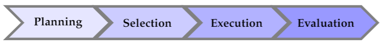
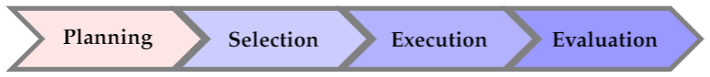

Standard Workflow
The audit sampling workflow is an essential component of statistical audit sampling with R. It involves a series of steps that help auditors select a representative sample from a population of transactions or items, and then use statistical analysis to draw conclusions about the entire population.
In this part of the book, we will delve into the details of the standard audit sampling workflow and how it can be implemented using the powerful tools and techniques available in R.

Stage 1: Planning
Proper planning of a sample can lead to an increase in audit efficiency. Auditing a small sample does not demand a great deal of audit effort, but it also does not provide a high level of assurance. In contrast, auditing a larger sample provides a higher level of assurance, but it also requires more audit effort. Therefore, it is often advantageous to determine the sample size beforehand in order to find the optimal balance between these two considerations. In Chapter (chap-planning?), we will examine the various factors that should be taken into account when planning an audit sample and how to use R to aid in the sample planning process.

Stage 2: Selection
Selecting a sample is the second step in the audit sampling workflow. In Chapter (chap-selection?), we will explore the various approaches and techniques that can be used to select an audit sample using R. We will also provide examples to help you understand how to apply these techniques in real-world audit scenarios.

Stage 3: Execution
The third stage of the audit sampling process is known as the execution stage. During this stage, the auditor examines a selection of items from the population and assesses their accuracy or fairness. This stage involves manual labor and does not involve statistical inference.
Stage 4: Evaluation
Evaluating an audit sample is a crucial stage in the audit sampling workflow. In Chapter (chap-evaluation?), we will examine the methods and techniques utilized to evaluate an audit sample from a classical and Bayesian point of view. We will delve into the diverse statistical tests and metrics that can be applied to estimate the population misstatement and quantify the strenght of evidence for or against a hypothesis provided by the sample data. By the end of this chapter, you will possess a thorough comprehension of how to effectively and efficiently evaluate an audit sample using R and make informed decisions based on the results. Chapter (chap-stratified-evaluation?) discusses how these methods can be generalized and applied when evaluating stratified samples.